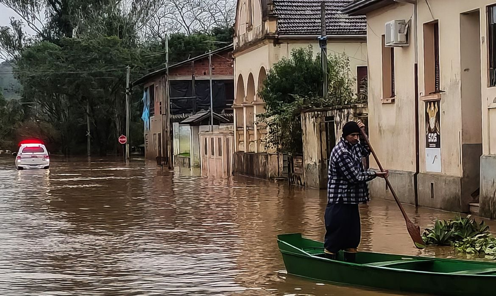

Inundação - Tragédia
A Defesa Civil do Rio Grande do Sul atualizou para 95 o número de mortos em razão dos temporais que atingem o estado. O
boletim divulgado na tarde desta terça-feira (7) ainda aponta que há outros 4 óbitos sendo investigados. O estado registra
131 desaparecidos e 372 feridos. Há 207,8 mil pessoas fora de casa. Desse total, são 48,8 mil em abrigos e 159 mil
desalojados (pessoas que estão nas casas de familiares ou amigos).
O RS tem 401 dos seus 497 municípios com algum relato de problema relacionado ao temporal, com 1,4 milhão de
pessoas afetadas. O prefeito de Porto Alegre, Sebastião Melo (MDB), recomendou que moradores dos bairros Cidade Baixa e
Menino Deus deixem a região. O aviso foi feito na segunda-feira (6), após a água começar a subir no local.
A Arena do Grêmio, em Porto Alegre, afirmou que não tem mais estrutura para acolher desabrigados. Além do
gramado alagado, a administração afirma que está sem água e luz e, por isso, faz o translado de mais de 300 pessoas a
abrigos municipais. Hospitais de campanha foram montados pelo governo federal para auxiliar pessoas feridas e desabrigadas.
No momento, os municípios de Estrela, Canoas e São Leopoldo foram contemplados pelas estruturas.

Assaltos, saques e assassinato em meio às chuvas
No município de Arroio do Meio, no Vale do Taquari, diversos estabelecimentos foram saqueados nos últimos dias. Pessoas não
identificadas têm invadido mercados, lojas e farmácias e levado os produtos das prateleiras.
Ainda em Arroio do Meio, um homem foi morto após ser atingido por um espeto usado em churrasqueiras. Outra pessoa foi
baleada e levada para um hospital de Lajedo. O UOL entrou em contato com a Polícia Civil do Rio Grande do Sul, que disse
investigar os casos, mas não passou maiores detalhes sobre motivação para os crimes e identidades das vítimas.
Reforço na segurança. O prefeito de Arroio do Meio, Danilo Bruxel (PP), disse ter avisado a Força Tática da Brigada Militar
para reforçar a segurança no município. Em Porto Alegre, diversos comércios também foram invadidos. Uma loja de produtos do
Grêmio, localizada na arena do clube, foi saqueada no sábado (4). Em Canoas, homens armados em barco e jet skis têm rondado
as casas abandonadas para praticar assaltos, e há relatos de assalto em albergues da cidade. Além dos saques e roubos nos
municípios afetados, golpistas aproveitam a situação e desviam doações enviadas aos gaúchos. O governador do estado, Eduardo
Leite (PSDB), lamentou essa situação e disse que "no meio de tanta sosolidariedade, tem aproveitadores que usam da
sensibilidade das pessoas" para roubar e aplicar golpes via Pix. Tragédia mostra o melhor e o pior das pessoas, afirmou o
secretário de Segurança de Porto Alegre, Alexandre Aragon. "Infelizmente nas tragédias aparece o que tem de melhor, que é a
grande maioria, e o que tem de pior nas pessoas", declarou em entrevista ao programa Bora Brasil (Band).